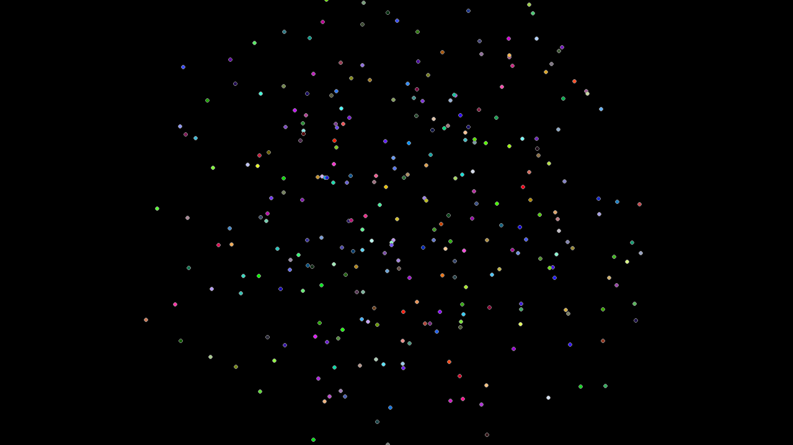
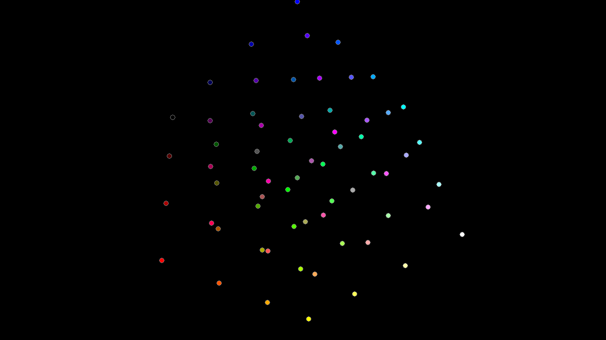
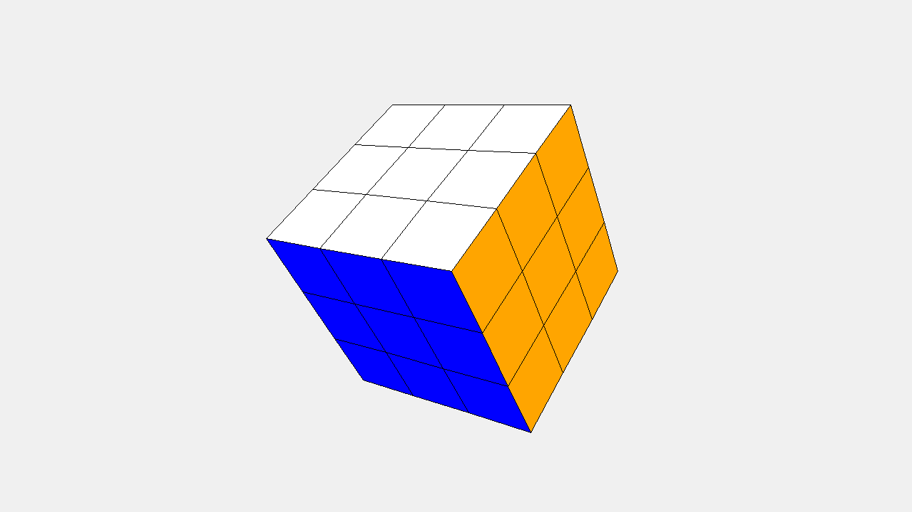

§7.1 3D 对象¶
一、3D 对象的容器控件¶
tkintertools 的 3D 画布不是只有一个，它实际的继承关系是下面这样的：
flowchart RL
id1(tkinter.Canvas)
id2(tkintertools.Canvas)
id3(tools_3d.Canvas3D)
id4(tools_3d.Space)
id4 --> id3 --> id2 --> id1其中，后面两个是属于 tkintertools 的子模块 tools_3d 里面的。
1.1 Space 类¶
内置的 Space 类已经帮我们绑定好了相关的操作方法，如鼠标右键拖动就是平移（translate）、鼠标左键拖动就是旋转（rotate）以及鼠标滚轮滚动就是缩放（scale），一般用于查看 3D 对象的外观。
1.2 Canvas3D 类¶
Canvas3D 属于是什么 3D 事件都没有绑定的一个容器控件了。它存在的目的就是让使用者可以自定义绑定的事件及绑定的函数，而不是强制使用某些按键来触发某些事件（如鼠标左键拖动旋转 3D 对象）。这里要说明一点的就是，由于 tkinter 模块制定绑定事件时，会把之前已经绑定的同类事件给覆盖掉，因此我们在自定义绑定事件的时候，不能把之前的给丢掉了，要在新的绑定事件中加上它们，此外，多个绑定事件之间的执行顺序非常重要，有时候顺序错误会导致不可估计的后果。
Canvas3D 类有一个名为 space_sort 方法非常关键，在每次画面改动之后都必须调用它来更新，否则画面不会有任何的变化。比如每一次平移、每一次旋转和缩放等，都需要调用一下它来更新一下画面。“space sort” 意为“空间位置排序”，也就是说，每次调用它后，它会根据每个 3D 对象的数据来得出它们的前后位置关系（尽管不精确，后面会再次提到），计算出前后关系再根据前后位置关系来更新画面。
不过 Space 类中已经帮我们内置好了这个方法的调用，因此 Space 相比于 Canvas3D 来说非常方便。不过有时候我们并不想让用户能够拖动画面，我们可能只是想展示某一 3D 动画或者画面，这时 Canvas3D 就派上用场了！因为它根本就没有对应事件的绑定！
注意
尽管 Space 如此方便了，但是无论是 Space 还是 Canvas3D，在新增加一个 3D 对象的时候，都应该调用一下 space_sort 方法来更新画面，因为考虑到性能和某些特殊要求的情况下，这个时候 space_sort 方法并不会被自动调用。
1.3 3D 容器控件的坐标规划¶
3D 容器控件采用的都是右手系，原点位于画布中央，下图清晰地展示了 3D 容器中的空间坐标系：

上图中，X、Y 和 Z 分别表示直角空间坐标系的三个轴，O 表示原点。画布的默认视角都是正对着 X 轴正方向的，当然，这里我为了展示清楚，将整体平移和旋转了一下，所以原点并不在画布中央，视角也不是正对着 X 轴正方向的。
1.4 3D 容器控件上的 UI 控件¶
尽管 3D 对象的基准在画布中央，但是这并不会影响 UI 控件的布局。和其他画布一样，UI 控件仍是以左上角为基准，反平面坐标系（y 轴反向）。
提示
无论怎样布局，UI 控件总是在 3D 对象的上方，也就是说，3D 对象不会遮挡 UI 控件。
二、创建基本的 3D 对象¶
基本的 3D 对象包括点（Point）、线（Line）和面（Side），后面还会讲到几种稍微复杂的 3D 对象，如长方体等。
为了方便演示效果，下面的代码都将采用 Space 作为容器控件来完成。
2.1 点¶
我们通过类 Point 来显示一个点，具体的参数可以去文档中查看。下面的代码我们绘制了多个点。
注意
点本身是没有大小的，但是这里我们为了显示出它，给了它一个虚拟的大小，但是这个大小并不会随着这个点在视觉上的远近而缩放，因为一旦进行缩放，那就是不是点，而是球了。
点的大小只是方便我们观察它而设定的，你可以根据你的喜好或者需要，设定它显示出来的大小。
下面只是随机地在一些位置绘制了一个点，总体上表现为一个球：

源代码
import math
import random
import tkintertools as tkt
from tkintertools import tools_3d as t3d
root = tkt.Tk('Point', 1280, 720)
space = t3d.Space(root, 1280, 720, 0, 0, bg='black', keep=False)
for _ in range(10000):
x = random.randint(-1000, 1000)
y = random.randint(-1000, 1000)
z = random.randint(-1000, 1000)
c = random.randint(0, 256 ** 3 - 1)
if math.hypot(x, y, z) <= 400: # 只要半径 400 以内的
t3d.Point(space, (x, y, z), size=3, fill=f'#{c:06X}', outline='grey')
space.space_sort()
root.mainloop()
或者我们可以让它们变得有规律些（应该看得出来是个正方体的样子）：

源代码
import tkintertools as tkt
from tkintertools import tools_3d as t3d
root = tkt.Tk('Point', 1280, 720)
space = t3d.Space(root, 1280, 720, 0, 0, bg='black', keep=False)
for x, r in zip([-300, -100, 100, 300], ['00', '55', 'AA', 'FF']):
for y, g in zip([-300, -100, 100, 300], ['00', '55', 'AA', 'FF']):
for z, b in zip([-300, -100, 100, 300], ['00', '55', 'AA', 'FF']):
t3d.Point(space, [x, y, z], fill=(fill := f'#{r}{g}{b}'), size=5, outline='grey')
space.space_sort()
root.mainloop()
2.2 线¶
我们通过类 Line 来显示一条有限长直线，具体参数参考文档。
下面是一个十分简单的示例：

源代码
import tkintertools as tkt
from tkintertools import tools_3d as t3d
root = tkt.Tk('Line', 1280, 720)
space = t3d.Space(root, 1280, 720, 0, 0, bg='black', keep=False)
for x, r in zip([-100, 0, 100], ['00', '77', 'FF']):
for y, g in zip([-100, 0, 100], ['00', '77', 'FF']):
for z, b in zip([-100, 0, 100], ['00', '77', 'FF']):
t3d.Line(space, [0, 0, 0], [x, y, z], fill=f'#{r}{g}{b}', width=3)
space.space_sort()
root.mainloop()
或许我们可以再玩点更高级的？

怎么样？是不是非常酷炫呢？
源代码
import random
import tkintertools as tkt
from tkintertools import tools_3d as t3d
root = tkt.Tk('Line', 1280, 720)
space = t3d.Space(root, 1280, 720, 0, 0, bg='black', keep=False)
def flower(x, y, z, k): # type: (int, int, int, int) -> None
"""绘制线条花"""
for dx, r in zip([-k, 0, k], ['00', '77', 'FF']):
for dy, g in zip([-k, 0, k], ['00', '77', 'FF']):
for dz, b in zip([-k, 0, k], ['00', '77', 'FF']):
t3d.Line(space, (x, y, z), (x + dx, y + dy, z + dz), fill=f'#{r}{g}{b}', width=3)
for _ in range(25):
x = random.randint(-500, 500)
y = random.randint(-500, 500)
z = random.randint(-500, 500)
k = random.randint(50, 100) # 线条最大长度
flower(x, y, z, k)
space.space_sort()
root.mainloop()
2.3 面¶
我们通过类 Side 来显示一个有限面积直边平面，具体参数参考文档。
下面简单用面来绘制一个正二十面体：

源代码
import itertools
import math
import statistics
import tkintertools as tkt
from tkintertools import tools_3d as t3d
root = tkt.Tk('Side', 1280, 720)
space = t3d.Space(root, 1280, 720, 0, 0, bg='black', keep=False)
m = 200 * math.sqrt(50 - 10 * math.sqrt(5)) / 10
n = 200 * math.sqrt(50 + 10 * math.sqrt(5)) / 10
points = []
dis_side = 200 * (3 * math.sqrt(3) + math.sqrt(15)) / 12 / ((math.sqrt(10 + 2 * math.sqrt(5))) / 4) # 面到中心的距离
count, color_lst = 0, ['00', '77', 'FF']
color = [f'#{r}{g}{b}' for r in color_lst for g in color_lst for b in color_lst]
for i in m, -m:
for j in n, -n:
points.append([0, j, i])
points.append([i, 0, j])
points.append([j, i, 0])
for p in itertools.combinations(points, 3): # 所有的顶点组合
dis = math.hypot(*[statistics.mean(c[i] for c in p) for i in range(3)])
if math.isclose(dis, dis_side):
t3d.Side(space, *p, fill=color[count], outline='white')
count += 1
space.space_sort()
root.mainloop()
面其实也可以玩出很多花样，比如，让它内部透明，只让其边框线条有颜色，这样或许我们可以得到这样的效果：

是不是看着挺有科技感的？在学了后面的章节“3D 动画”之后，让它动起来就更有内味儿了！
源代码
import itertools
import math
import statistics
import tkintertools as tkt
from tkintertools import tools_3d as t3d
root = tkt.Tk('Side', 1280, 720)
space = t3d.Space(root, 1280, 720, 0, 0, bg='black', keep=False)
m = 200 * math.sqrt(50 - 10 * math.sqrt(5)) / 10
n = 200 * math.sqrt(50 + 10 * math.sqrt(5)) / 10
points = []
dis_side = 200 * (3 * math.sqrt(3) + math.sqrt(15)) / 12 / ((math.sqrt(10 + 2 * math.sqrt(5))) / 4) # 面到中心的距离
for i in m, -m:
for j in n, -n:
points.append([0, j, i])
points.append([i, 0, j])
points.append([j, i, 0])
for p in itertools.combinations(points, 3): # 所有的顶点组合
dis = math.hypot(*[statistics.mean(c[i] for c in p) for i in range(3)])
if math.isclose(dis, dis_side):
t3d.Side(space, *p, fill='', outline='cyan')
space.space_sort()
root.mainloop()
警告
目前由于技术原因，实际过程中不建议给面的内部上色，当两个面的距离比较近时，这两个面可能出现前后位置关系显示颠倒的问题！尚无比较好的解决办法！对于后面的复杂 3D 对象（即几何体）也是如此。
目前前后位置的确定是通过欧几里得距离计算得到的，在两个面之间有一定距离时才能正确显示其前后位置关系。
三、创建复杂的 3D 对象¶
复杂的 3D 对象是指非基本的对象，如长方体（Cuboid）、四面体（Tetrahedron）等复杂的几何体，当然，你也可以直接用基本的 3D 对象将它们模仿出来，但这并不是封装好的，它们并非一个整体，直接使用 Geometry 及其子类是更加推荐的选择。
3.1 长方体¶
我们可以直接使用 Cuboid 来创建一个长方体，具体参数见文档。
下面利用长方体简单地绘制一个魔方，这里放一张白色背景的图（防止你认为只有黑色背景）。

源代码
import tkintertools as tkt
from tkintertools import tools_3d as t3d
root = tkt.Tk('Cuboid', 1280, 720)
space = t3d.Space(root, 1280, 720, 0, 0, keep=False)
for a in -100, 0, 100:
for b in -100, 0, 100:
for c in -100, 0, 100:
t3d.Cuboid(space, a - 50, b - 50, c - 50, 100, 100, 100,
color_fill_up='white', color_fill_down='yellow', color_fill_left='red',
color_fill_right='orange', color_fill_front='blue', color_fill_back='green')
space.space_sort()
root.mainloop()
当我们将长方体也设为透明，再加上前一章所学的渐变色，就可以得到像下面这样的效果：

源代码
import tkintertools as tkt
from tkintertools import tools_3d as t3d
root = tkt.Tk('Cuboid', 1280, 720)
space = t3d.Space(root, 1280, 720, 0, 0, bg='black', keep=False)
for l, c in zip(range(10, 300 + 1, 10), tkt.color(['white', 'black'], seqlength=30)):
s = l << 1
t3d.Cuboid(space, -l, -l, -l, s, s, s,
color_outline_back=c, color_outline_down=c, color_outline_front=c,
color_outline_left=c, color_outline_right=c, color_outline_up=c)
space.space_sort()
root.mainloop()
3.2 四面体¶
同上，我们也可以用 Tetrahedron 直接创建四面体，具体参数见文档。
这里就不炫了，搞个简单点的完事儿！

源代码
import math
import tkintertools as tkt
from tkintertools import tools_3d as t3d
root = tkt.Tk('Tetrahedron', 1280, 720)
space = t3d.Space(root, 1280, 720, 0, 0, keep=False)
t3d.Tetrahedron(space, [-100, 0, 0 + 10], [50, 50 * math.sqrt(3), 0 + 10], [50, -50 * math.sqrt(
3), 0 + 10], [0, 0, 100 * math.sqrt(2) + 10], color_fill=['red', 'yellow', 'blue', 'green'])
t3d.Tetrahedron(space, [-100, 0, 0 - 10], [50, 50 * math.sqrt(3), 0 - 10], [50, -50 * math.sqrt(
3), 0 - 10], [0, 0, -100 * math.sqrt(2) - 10], color_fill=['red', 'yellow', 'blue', 'green'])
space.space_sort()
root.mainloop()
3.3 任意凸面几何体¶
除了上面提到的两种，实际我们可以通过 Geometry 创建任意的（凸面）多面体。但这里要注意的是，凹面几何体也是可以创建的，不过目前不保证凹面几何体完全没问题，因此需慎用凹面几何体。
本质上，Geometry 的背后都是 Side，它只不过是将其进行了一个组合和封装，因此我们就是通过多个 Side 类创建它的，此外，我们在创建了它之后，还可以用它的 append 方法向其继续添加 Side。